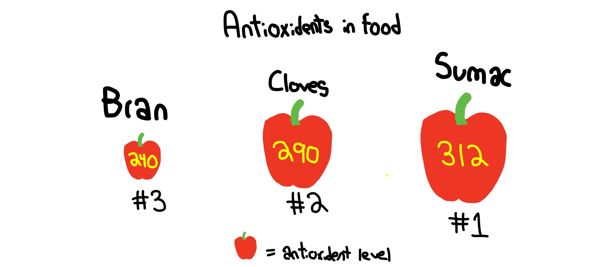

For our project we wanted to know which food held the highest value in antioxidant, and if the level of it was a good enough size of antioxidants. Therefore, our group set out to try and prove our question right or not. So, we did some research on Tuvalabs and found a lab that showed a graph of the highest value antioxidants. We chose a line graph because it was easy to represent the data and we could clearly see the ones that held higher value than others. We found out that Sumac actually held the highest value of antioxidant, with a level of 312. Some may think that spices have more value, which they do have a lot of value, but not as much, although being ranked #2 out of all of the food labeled. Antioxidants are a good thing that we all need, and can be found abundantly in food, not just pills or remedys. We found out that you can get enough anti-oxidants from food by our data, which proved our case.
 What this graph represents is the top 3 highest level of antioxidants. The apple represents the size, as it gets bigger, so does the level of the antioxidants. We scaled this to make sure it was accurate. The number represented on the apple shows the level of antioxidant, which is shown. We got this data from TuvaLabs and other recourses.